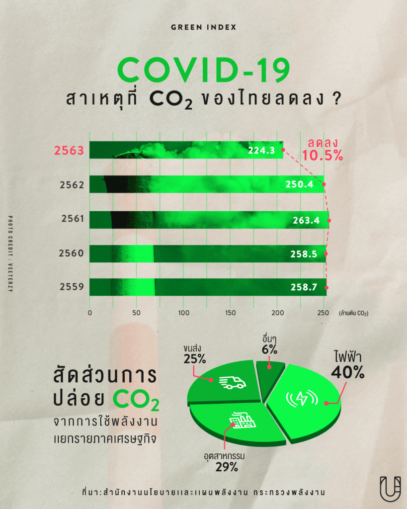

หลังจากต้องอยู่กับโควิด-19 มาปีกว่า ทำให้เราเห็นการเปลี่ยนแปลงหลายๆ อย่าง หนึ่งในนั้นคือสัดส่วนการปล่อยก๊าซคาร์บอนฯ ที่ลดลงเป็นประวัติการณ์ เห็นได้จากผลการวิจัยของมหาวิทยาลัยอีสต์แองเกลีย และมหาวิทยาลัยเอ็กเซเตอร์ ร่วมกับโกลบอล คาร์บอน ที่ถูกตีพิมพ์ในวารสารข้อมูลวิทยาศาสตร์ระบบโลก (ESSD) ว่า การแพร่ระบาดของโควิด-19 ในปี 2563 ทำให้อัตราการปล่อยก๊าซคาร์บอนฯ ต่ำสุดนับตั้งแต่ยุคสงครามโลกครั้งที่ 2 หรือลดลง 2,400 ล้านตัน คิดเป็น 7 เปอร์เซ็นต์ เมื่อเทียบกับปี 2562 เนื่องจากการเดินทางด้วยรถยนต์และเครื่องบินลดลง
| ทำความรู้จักกับคาร์บอนไดออกไซด์ (CO2)
คาร์บอนไดออกไซด์ (CO2) ถือเป็นหนึ่งในกลุ่มก๊าซเรือนกระจกที่ถูกปล่อยสู่ชั้นบรรยากาศโลกมากที่สุด ทั้งยังเป็นตัวการที่ทำให้เกิดการสะสมพลังงานความร้อนในชั้นบรรยากาศมากที่สุดด้วยเช่นกัน เนื่องจากมีปริมาณมากและเกิดขึ้นเองได้ตามธรรมชาติ เช่น จากการระเบิดของภูเขาไฟ การหายใจของสิ่งมีชีวิต หรือการเผาไหม้ของอินทรียวัตถุ อย่างซากพืช ซากสัตว์ แต่ในปัจจุบันกิจกรรมของมนุษย์กลับกลายเป็นตัวการหลักในการสร้างและปล่อยก๊าซคาร์บอนฯ ไม่ว่าจะเป็นการเผาไหม้ของเชื้อเพลิงทั้งจากโรงงานอุตสาหกรรม รถยนต์ รวมไปถึงการตัดไม้ทำลายป่า การเผาหญ้าเผาฟางหลังการเก็บเกี่ยว แม้กระทั่งการทำปศุสัตว์ และการเลี้ยงสัตว์ ก็ส่งผลให้ปริมาณก๊าซคาร์บอนฯ เพิ่มขึ้นอย่างรวดเร็วด้วยเช่นกัน มาดูที่ไทยกันบ้าง หลังจากดูรายงานของสำนักงานนโยบายและแผนพลังงาน กระทรวงพลังงาน พบว่า การปล่อยก๊าซคาร์บอนฯ เมื่อเทียบกับปริมาณการใช้พลังงานของประเทศไทยในปี 2563 ‘ลดลง’ จากปี 2562

| ปี 63 ไทยปล่อยก๊าซคาร์บอนฯ เท่าไหร่
ในปี 2563 ไทยปล่อยก๊าซคาร์บอนฯ อยู่ที่ 224.3 ล้านตัน CO2 ลดลงร้อยละ 10.5 เมื่อเทียบกับปีก่อน เนื่องจากการใช้พลังงานทดแทนที่เพิ่มมากขึ้นตามนโยบายส่งเสริมพลังงานทดแทนของรัฐบาล รวมถึงปัญหาการแพร่ระบาดของโควิด-19 ทำให้เกิดการชะลอตัวของเศรษฐกิจโลกและเศรษฐกิจของประเทศ โดยเมื่อเทียบกับปี 2562 การปล่อยก๊าซคาร์บอนฯ ลดลงในทุกภาคเศรษฐกิจ ทั้งภาคการขนส่ง ภาคอุตสาหกรรม และภาคเศรษฐกิจอื่นๆ ปริมาณการปล่อยก๊าซคาร์บอนฯ จากการใช้พลังงานของประเทศ – ปี 2559 ปล่อยคาร์บอนฯ อยู่ที่ 258.7 ล้านตัน CO2 – ปี 2560 ปล่อยคาร์บอนฯ อยู่ที่ 258.5 ล้านตัน CO2 – ปี 2561 ปล่อยคาร์บอนฯ อยู่ที่ 263.4 ล้านตัน CO2 – ปี 2562 ปล่อยคาร์บอนฯ อยู่ที่ 250.4 ล้านตัน CO2 – ปี 2563 ปล่อยคาร์บอนฯ อยู่ที่ 224.3 ล้านตัน CO2 โดยใน 224.3 ล้านตัน CO2 ถ้าแยกออกเป็นรายภาคเศรษฐกิจจะพบว่า ‘ภาคการผลิตไฟฟ้า’ มีสัดส่วนการปล่อยก๊าซคาร์บอนฯ สูงที่สุด จากเดิมอยู่ที่ 94.3 ล้านตัน เหลือ 90 ล้านตัน CO2 หรือร้อยละ 40 ของการปล่อยก๊าซคาร์บอนฯ ทั้งหมด เนื่องจากมีการส่งเสริมใช้พลังงานทดแทนในการผลิตไฟฟ้ามากขึ้น จึงทำให้การปล่อยก๊าซคาร์บอนฯ ลดลง ต่อที่ ‘ภาคอุตสาหกรรม’ ก็มีสัดส่วนลดลงเช่นกัน จาก 69.6 ล้านตัน CO2 เหลือ 65.7 ล้านตัน CO2 หรือร้อยละ 29 ของการปล่อยก๊าซคาร์บอนฯ ทั้งหมด เนื่องจากการใช้พลังงานที่ลดลงตามการผลิตในภาคอุตสาหกรรมที่ลดลง โดยเฉพาะอุตสาหกรรมเหล็กและโลหะพื้นฐาน สิ่งทอ อิเล็กทรอนิกส์ และยานยนต์ ในส่วนของ ‘ภาคการขนส่ง’ จากปีก่อนที่มีการปล่อยก๊าซคาร์บอนฯ 71.5 ล้านตัน CO2 ปี 2563 ลดลงเหลือ 56.3 ล้านตัน CO2 หรือร้อยละ 25 เนื่องจากมาตรการจำกัดการเดินทางในช่วงการแพร่ระบาดของโควิด-19 และมาตรการส่งเสริมให้คน Work from Home ทำให้การใช้รถยนต์ในการเดินทางน้อยลง สำหรับ ‘ภาคเศรษฐกิจอื่นๆ’ ในปี 2562 มีการปล่อยก๊าซคาร์บอนฯ 15.0 ล้านตัน CO2 ลดลงเหลือเพียง 12.3 ล้านตัน CO2 หรือคิดเป็นร้อยละ 6 ตามการลดลงของการใช้พลังงานในภาคเกษตรกรรมที่ได้รับผลกระทบจากภัยแล้ง และการใช้พลังงานของภาคพาณิชยกรรมที่ได้รับผลกระทบจากการแพร่ระบาดของโควิด-19 เป็นต้น ในขณะที่หากดูจากการปล่อยก๊าซคาร์บอนฯ ต่อหัวประชากร ในปี 2563 คนไทยปล่อยก๊าซคาร์บอนฯ 3.77 ตัน CO2/หัวประชากร หรือถ้าดูจากการปล่อยก๊าซคาร์บอนฯ ต่อการใช้พลังงาน ไทยมีการปล่อยก๊าซคาร์บอนฯ เฉลี่ย 1.87 พันตัน CO2/1KTOE นับเป็นอัตราที่ค่อนข้างต่ำเมื่อเทียบกับค่าเฉลี่ยของประเทศในกลุ่มสหภาพยุโรป ที่ส่วนใหญ่อยู่ที่ 2.02 – 3.05 พันตัน CO2/1KTOE คงต้องรอดูต่อไปว่าถ้าโควิด-19 หายไป ผู้คนออกมาทำงาน เดินทางท่องเที่ยว และใช้ชีวิตเหมือนเดิม สัดส่วนการปล่อยก๊าซคาร์บอนฯ ของทั่วโลกและของประเทศไทยจะยังต่ำลงแบบนี้ต่อไปเรื่อยๆ หรือไม่
Sources : กระทรวงพลังงาน | https://bit.ly/2S22Lp9, https://bit.ly/3vpV9v6
โพสต์ทูเดย์ | https://bit.ly/3vpVrCc